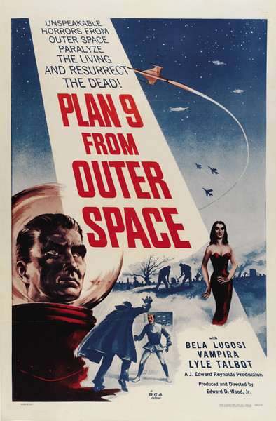

Plan 9 From Outerspace

Plan 9 from Outer Space (originally titled Grave Robbers from Outer Space) is a 1959 American independent black and white science fiction film, written, produced, directed, and edited by Ed Wood, that stars Gregory Walcott, Mona McKinnon, Tor Johnson and Vampira. The film also posthumously bills Bela Lugosi as a star (silent footage of the actor had actually been shot by Wood for another, unfinished film just prior to Lugosi's death in August 1956). Plan 9 from Outer Space was released theatrically in 1959 by Distributors Corporation of America (then credited as Valiant Pictures).
The storyline concerns extraterrestrials who are seeking to stop humanity from creating a doomsday weapon that could destroy the universe. The aliens implement "Plan 9," a scheme to resurrect the Earth's dead, referred to as "ghouls." By causing chaos, the aliens hope the crisis will force humanity to listen to them. If not, the aliens will then destroy mankind with armies of the undead.
Plan 9 from Outer Space played on television in relative obscurity until 1980, when authors Harry Medved and Michael Medved dubbed it the "worst film ever made" in their book The Golden Turkey Awards. Wood and his film were posthumously given two Golden Turkey Awards for Worst Director Ever and Worst Film. It has since been retroactively described as "The epitome of so-bad-it's-good cinema" and has gained a cult following.
Cast
- Gregory Walcott as Jeff Trent
- Mona McKinnon as Paula Trent
- Duke Moore as Lt. John Harper
- Tom Keene as Col. Tom Edwards
- Carl Anthony as Patrolman Larry
- Paul Marco as Patrolman Kelton
- Tor Johnson as Inspector Daniel Clay
- Dudley Manlove as Eros
- Joanna Lee as Tanna
- John Breckinridge as The Ruler
- Lyle Talbot as Gen. Roberts
- David De Mering as Danny
- Norma McCarty as Edith
- Bill Ash as Captain
- Rev. Lynn Lemon as Minister at Clay's funeral
- Ben Frommer and Gloria Dea as Mourners
- Conrad Brooks as Patrolman Jamie
- Maila Nurmi as Vampire Girl
- Bela Lugosi as the Old Man/Ghoul Man
- Criswell as Himself/Narrator
Plot
In California, an old man (Bela Lugosi) grieves the loss of his wife (Vampira) and on the next day he also dies. However, the space soldier Eros and her mate Tanna use an electric device to resurrect them both and the strong Inspector Clay (Tor Johnson) that was murdered by the couple. Their intention is not to conquer Earth but to stop mankind from developing the powerful bomb "Solobonite" that would threaten the universe. When the population of Hollywood and Washington DC sees flying saucers on the sky, a colonel, a police lieutenant, a commercial pilot, his wife and a policeman try to stop the aliens.